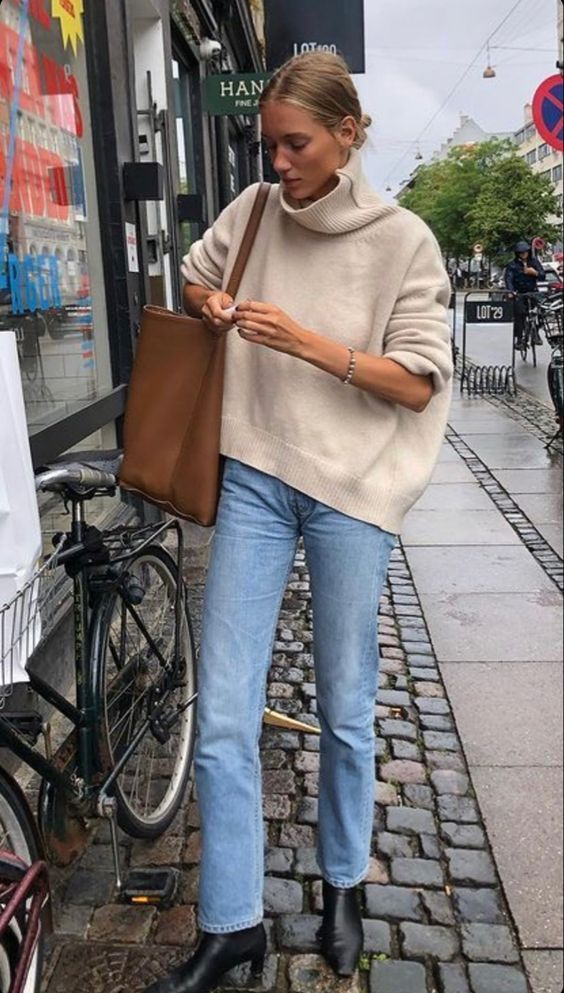
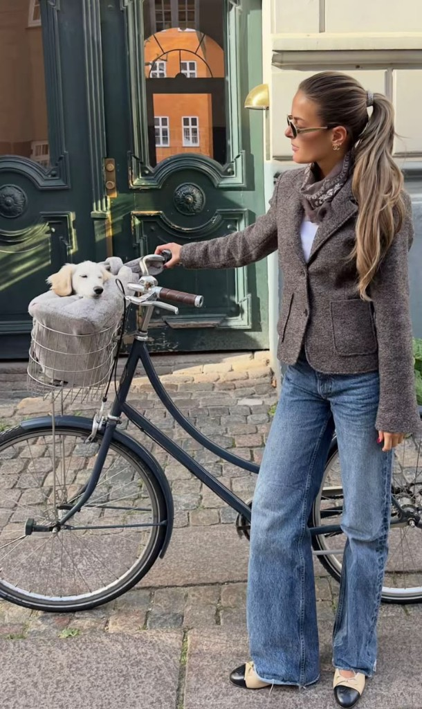
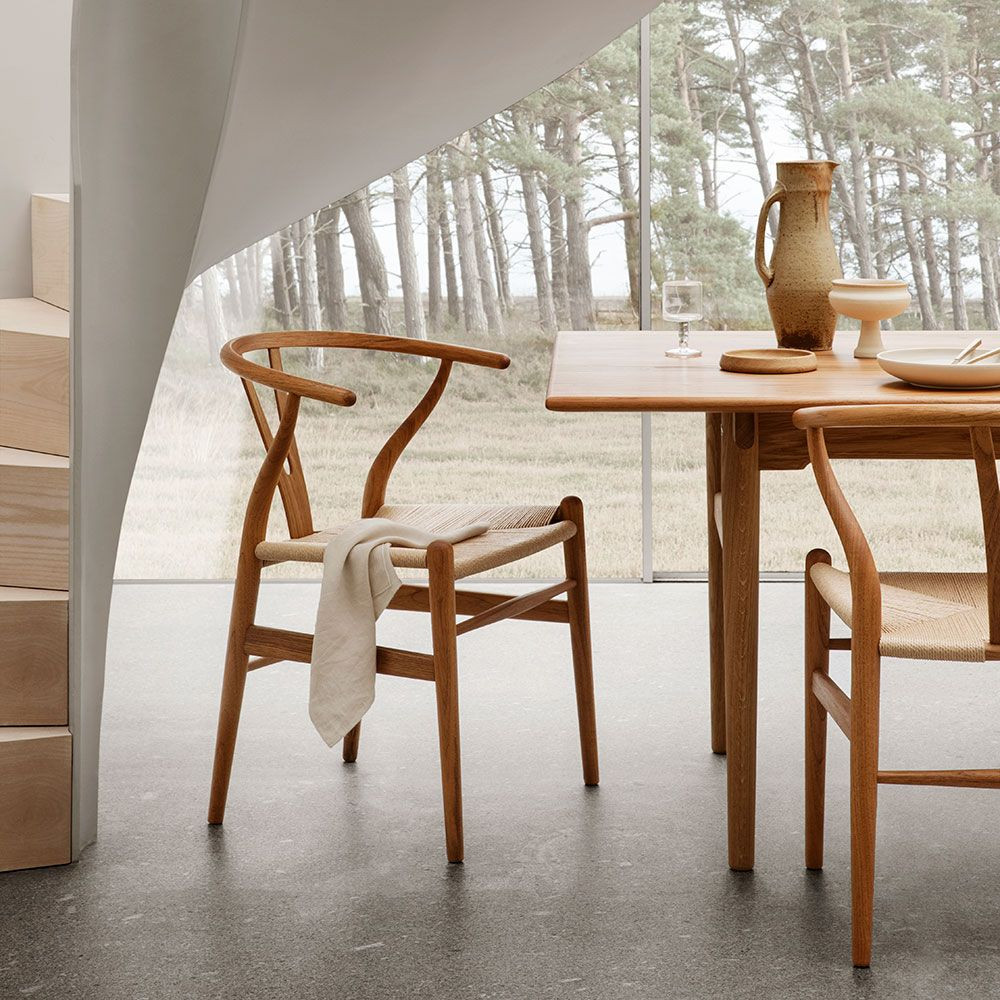

5 Things I Learned About Design From Living in Scandinavia for 12 Years
I moved to Denmark at 18 years old, and somewhere along the way, it changed the way I look at design.
When I first arrived, I probably saw Scandinavian design much like many people do from the outside: clean lines, pale woods, beautiful furniture, neutral colours and interiors that somehow manage to look both simple and incredibly sophisticated. Scandinavian Design is also more than minimalist IKEA furniture and there is more to it than just the aesthetic. There was a certain perfection to it that I found fascinating.
But after more than a decade of living here, I’ve realised that the real lessons are less about aesthetics and much more about how design makes us feel and live.
These are the five lessons that have stayed with me.
1. Good design doesn't need to shout
One of the first things I noticed in Scandinavia was how comfortable design seemed to be with being quiet.
A beautiful chair doesn't necessarily need to become the focal point of the room. A lamp can be beautifully designed without demanding attention. Architecture can be elegant without trying to impress you. There is a certain restraint to it, and that taught me something important:
Good design doesn't always need to compete for attention.
Sometimes the best-designed things are the things you barely notice because they simply work. A chair is comfortable, a kitchen is easy to use, a light creates the right atmosphere and a room makes you want to stay.
Coming from a culture where interiors can be much more decorative and where individual pieces often have a strong personality, I found this restraint fascinating. It isn't about having no personality. It is about knowing when to stop.
This principle also applies to digital products. A good example is Too Good To Go, the Danish app that allows users to buy unsold food from restaurants, cafés, bakeries and supermarkets at a reduced price.
The idea behind the app is already powerful, but its design does not try to make the experience more complicated than it needs to be. You open the app, see what is available nearby, choose a collection time and reserve a surprise bag. The interface supports the decision instead of competing with it.
Too Good To Go could easily have turned food waste into a complicated marketplace filled with filters, promotions and constant notifications. Instead, its core experience remains relatively clear. The app helps you discover an offer, understand the practical details and take action. Once you have made your choice, the design gets out of the way.
That is what I mean by quiet design. It is not invisible because it lacks character. It is quiet because it understands that the user has come to do something specific.
2. Function is part of beauty
Scandinavian design is often described as minimalist. After living here, however, I think "functional" is the more interesting word.
The question isn't only whether something looks good. It is also whether it makes everyday life better. That distinction has changed the way I look at almost everything, from furniture and interiors to architecture, digital products and the small objects we use every day.
A good example is MobilePay, the Danish payment app. Its design is simple and direct: you can send money, request a payment or check a transaction without having to navigate through a complicated system. The interface does not try to impress you with unnecessary features or visual effects. It focuses on the task and makes it easy to complete.
You can see the same principle in many Scandinavian apps. Their interfaces are often calm, intuitive and carefully structured. Instead of filling the screen with unnecessary features, they tend to guide you towards the action you actually want to take. The design does not constantly ask for your attention. It helps you complete a task and then gets out of the way.
That approach feels very similar to the way a well-designed Scandinavian home works. During the long, dark winters, you become very aware of how your home functions. Where does the light come from? Where do you put your coat when you come home? Is there somewhere comfortable to sit? Does the lighting make the room feel warm when it is already dark outside?
These aren't secondary questions. They are design questions.
I've come to believe that functionality and beauty aren't opposites. When something has been thoughtfully designed around the way people actually live, its usefulness becomes part of its beauty. A well-designed object or app doesn't make you think about how clever it is. It simply makes your life a little easier.
3. Less can give you more
Before living in Scandinavia, I probably thought minimalism meant having fewer things. I see it differently now. It isn't necessarily about owning less. It is about making space for what matters.
This idea is also visible in Scandinavian fashion. Danish and Swedish clothing brands often rely on simple silhouettes, restrained colours and high-quality materials rather than excessive decoration. A well-cut coat, a good knit or a pair of well-made trousers can become the foundation of an entire wardrobe. The pieces are designed to work together, rather than compete with one another.
What I find particularly interesting is the balance between simplicity and personality. Scandinavian fashion is not always plain or anonymous. A strong cut, an unexpected texture, a beautiful colour or a carefully chosen accessory can be enough to make an outfit distinctive. The overall look remains considered, but it does not feel overworked.
There is a confidence in leaving something out. A wall doesn't need to be filled simply because it is empty, and a shelf doesn't need to be decorated from one end to the other. The same principle applies to clothing, products, graphic design, branding and even writing. Not every available space needs to be occupied, and not every possible idea needs to be included.
This has made editing one of the most important design skills for me. When looking at a project, I increasingly ask myself what can be removed rather than what can be added. What is unnecessary? What is distracting? What is stopping the important thing from being seen?
That is perhaps one of the biggest differences between simply decorating something and actually designing it. Decoration can encourage us to keep adding. Design often asks us to make choices.
Sometimes the strongest design decision is the one you don't make.



4. Design should respond to its surroundings
Living in Scandinavia has also made me much more aware of the relationship between design and nature. Natural light, wood, stone, texture, views and the changing seasons are not simply decorative elements. They influence how a space feels and how people experience it.
One chair that captures this idea particularly well is the CH24 Wishbone Chair, designed by Hans J. Wegner. It is often associated with Scandinavian design because of its simple silhouette, natural materials and careful craftsmanship. But what makes the chair interesting to me is not simply its appearance. Its design responds to the human body, the material and the way the chair is used.
The curved back and distinctive Y-shaped support give it a light, almost sculptural presence, while the woven seat provides comfort and stability. It feels elegant without being fragile, and refined without becoming formal. The chair works in a modern interior, but it can also sit comfortably in a more traditional setting.
That adaptability is important. The chair does not impose a particular atmosphere on its surroundings. Instead, it responds to them.
The quality of light in Scandinavia is very different from what I was used to, and you become incredibly conscious of it. In winter, light becomes precious. In summer, there can be almost too much of it. That changes how you think about windows, lamps, colours, materials and even the positioning of furniture.
I've learned that good design isn't always about controlling your environment. Sometimes it is about responding to it. The Wishbone Chair is a good example of this principle because its beauty comes from a balance between form, function, material and context.
This is something I think is particularly relevant when we talk about design in other countries. Paris is not Copenhagen. A house in Romania is not an apartment in Stockholm. A Mediterranean climate, a Haussmannian apartment and a Nordic wooden house all have different stories to tell.
Good design starts by listening to the place. It should take into account the climate, the architecture, the light and, perhaps most importantly, the way people actually live there. Trying to reproduce a Scandinavian interior in another country without considering its context misses the point entirely.

5. The best design is human
Perhaps the biggest lesson I've learned after leaving in Denmark is that design isn't really about objects. It is about people.
It is about how we live around a table, how we welcome friends, where we sit with a coffee and how we feel when we come home after a long day. It is about the atmosphere created when the lights are dimmed and dinner starts, or the feeling of sitting somewhere warm while it is dark and cold outside.
This is where the Scandinavian emphasis on comfort and conviviality becomes interesting. The idea often associated with hygge isn't really about candles, blankets and beige interiors. At its heart, it is about creating an atmosphere where people feel comfortable enough to slow down and spend time together.

That has made me think much more about the emotional side of design. A room can be technically perfect and still feel cold. Another room can be incredibly simple and immediately feel like home.
These days, when I think about a project, I find myself asking a few simple questions: How will someone feel here? Will this make their day easier? Will they want to stay a little longer? And will it still feel right in five or ten years?
Those questions interest me much more than whether something happens to be fashionable this season.
After 12 years, I see Scandinavian design differently
Living in Scandinavia hasn't convinced me that every interior should be minimalist, white and filled with Scandinavian furniture. Quite the opposite. It has taught me that there is no single formula for good design.
The real lesson is a way of thinking: design with intention, design for people, pay attention to the environment, edit rather than endlessly add, and let beauty come from things that are useful, thoughtful and made to last.
Perhaps that is the biggest thing my 12 years spend studying and working in Denmark have taught me. The best design isn't necessarily the design that makes you stop and say, "That's beautiful." Sometimes it is the design that makes you quietly think:
"This just feels right."